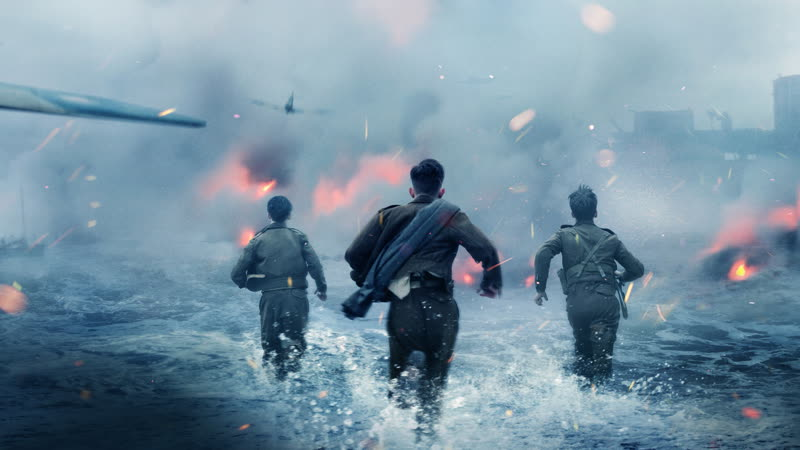
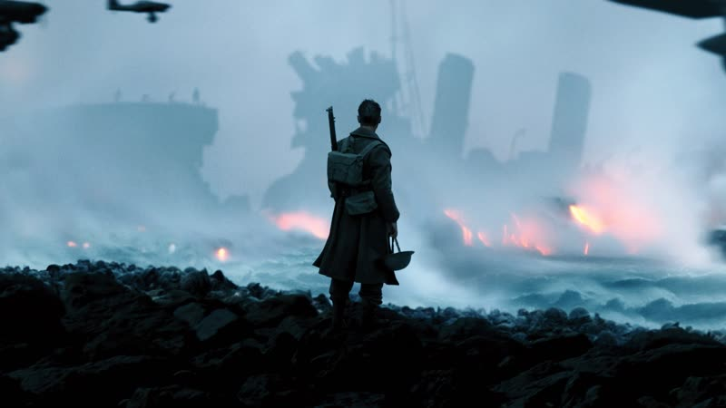
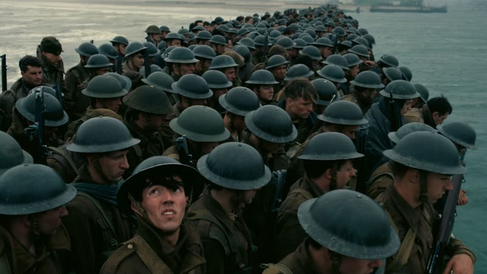
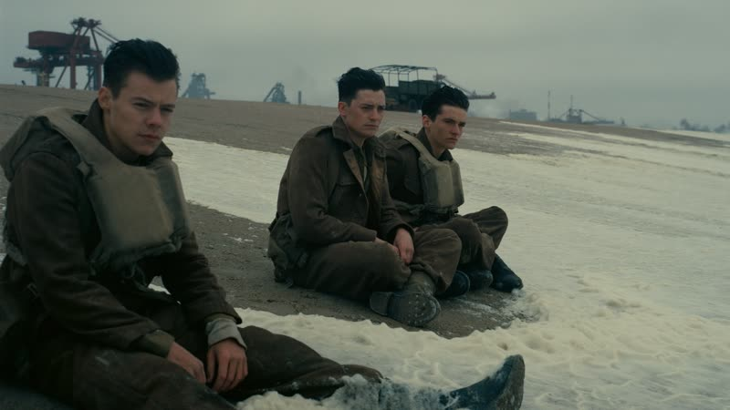

2017
Dunkirk
The 1940 evacuation told as survival suspense, with land, sea and air stories running on different clocks until they collide.
How it plays with time
Three stories are cut together as if simultaneous but cover different spans: a week on the beach (the mole), a day on a civilian boat crossing the Channel, and an hour in the air with Spitfire pilots. The clocks only line up near the end, so early events on screen can be days apart in story time, and the stories snowball into one another. source
Themes
- Duty
- A pilot keeps flying on with a failing fuel gauge, rationing what he has left so he can keep protecting the ships below. His job is the only thing he is thinking about, and he treats the cost as arithmetic.
- Fear
- Soldiers on the beach and a torpedoed ship crowd into a hold, and every sound outside becomes a threat. The film keeps the enemy off screen so the dread comes from waiting, not from seeing.
- Time
- The hour in the air, the day at sea and the week on the beach are cut together as if they happen at once, with a ticking score pushing all three forward. The audience feels the clock without being told which one it is watching. source
- Sacrifice
- A civilian skipper takes his small boat across the Channel to pick up strangers, knowing the crossing is dangerous. His small act is one of many that together change the outcome. source
Where it came from
- Nolan wanted to apply the snowballing momentum of the third act of his earlier films across the whole film, using a new rhythm and fewer conventional dramatic devices. Nolan
I wanted to experiment with a new rhythm.
source - He treated the story as sustained suspense rather than horror, citing The Wages of Fear and Mad Max: Fury Road as models. Nolan source
- The crew studied Hitchcock, David Lean's landscapes and the beach imagery of Ryan's Daughter, alongside Clouzot's suspense language. Nolan source
- He conceived the idea in the mid-1990s after sailing the Channel with Emma Thomas, and she persuaded him to write a script rather than improvise. Nolan and Emma Thomas source
Stills




Stills © their studios, used here for commentary and criticism.
People who keep coming back
- Emma Thomas, Producer: also following, memento, insomnia, batman begins, the prestige, the dark knight, inception, the dark knight rises, interstellar, tenet, oppenheimer
- Hoyte van Hoytema, Cinematographer: also interstellar, tenet, oppenheimer
- Lee Smith, Editor: also batman begins, the prestige, the dark knight, inception, the dark knight rises, interstellar, tenet, oppenheimer
- Hans Zimmer, Composer: also batman begins, the dark knight, inception, the dark knight rises, interstellar
- Cillian Murphy, Actor (Shivering Soldier): also batman begins, the dark knight, inception, the dark knight rises, oppenheimer
- Tom Hardy, Actor (Farrier): also inception, the dark knight rises
- Michael Caine, Uncredited voice (Fortis Leader): also batman begins, the prestige, the dark knight, inception, the dark knight rises, interstellar, tenet
How it was received
Critics hailed it as a technical triumph and one of the best war films, praising the immersion, sound and structure. A minority found it light on character and emotion. Metacritic 94 source. Rotten Tomatoes 92% source.
It sits as a divisive favourite: audience reviews praise the score, sound and sense of dread, while others still call it cold or hard to follow because of the time-shifting structure. Metacritic users rate it 8.2 of 10.
Three things most people miss
- The ticking sound in the score is built from a recording of Nolan's own pocket watch, and the music uses a Shepard tone, an illusion of endlessly rising pitch, which the script was written to fit. He had used the same device in The Prestige. source
- The Germans are never shown on screen and Churchill and the war rooms are left out on purpose, so viewers only know what the men on the ground could know. source
- Much of it was done practically: the mole was rebuilt from original blueprints, about twenty real Little Ships were used, French bans on pyrotechnics meant air cannons made the explosions, and Michael Caine's uncredited radio voice is a nod to Battle of Britain. source
Cast
Fionn Whitehead as Tommy; Tom Glynn-Carney as Peter Dawson; Jack Lowden as Collins; Harry Styles as Alex; Aneurin Barnard as Gibson.